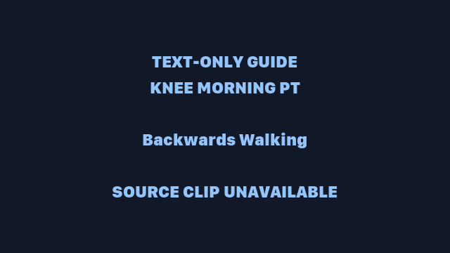
The first movement of the day: wakes up knee tracking and VMO without loading the joint.
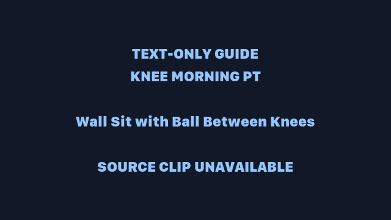
Isometric quad work that also trains the adductors to keep the knee stable.
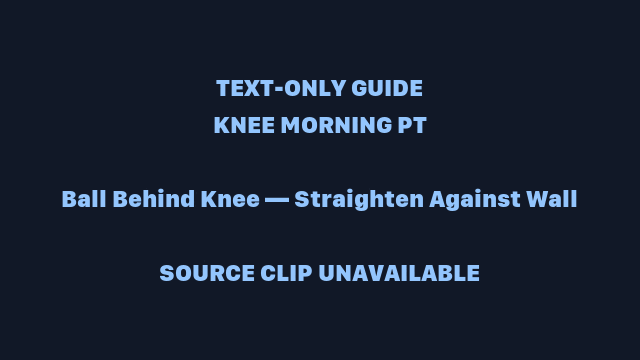
The "new targil" — terminal knee extension training with the ball as feedback.
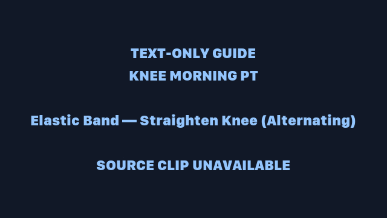
Band-resisted knee extension with a slow, controlled finish — pure VMO targeting.
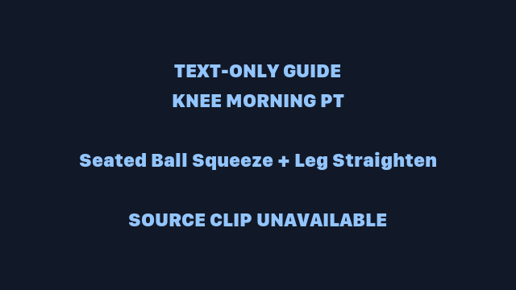
Squeeze + straighten — turns adductor activation into a full-extension movement.
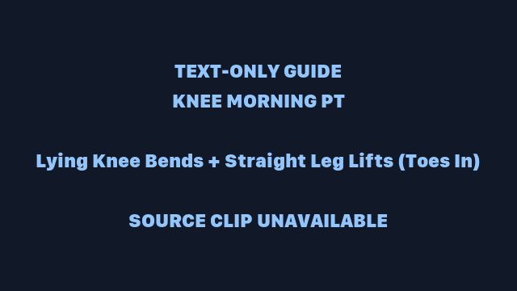
The floor pair that starts the day's range-of-motion and glute/quad balance.
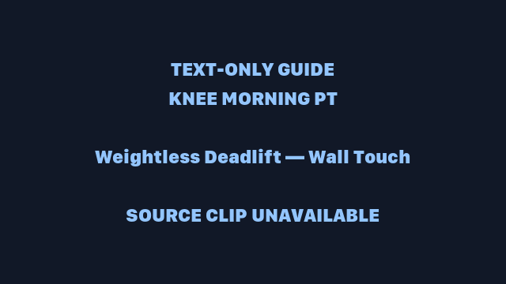
Heel + hips touching the wall, hinge down, touch the knee — posterior chain without load.
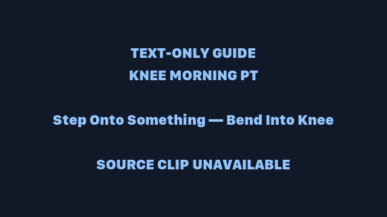
First loaded knee bend of the day — a step-up that respects the range you've earned.
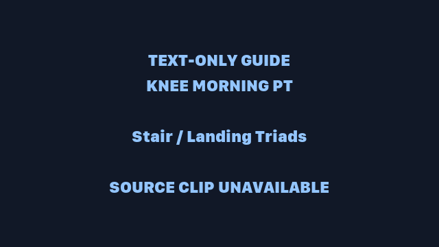
The protocol's money drill: eccentric control down stairs and landing confidence. If knees flare, cut this block — it's the heaviest morning item.
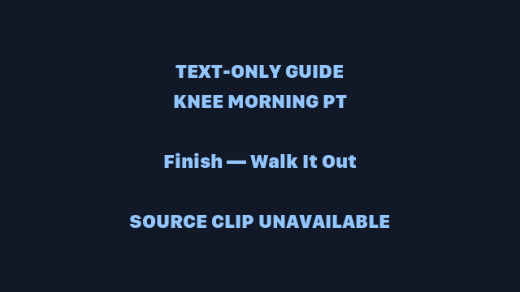
Blood back to the joint, tracking confirmed, day started.
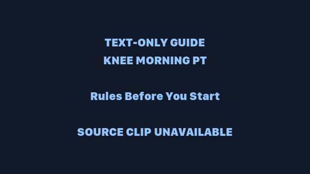